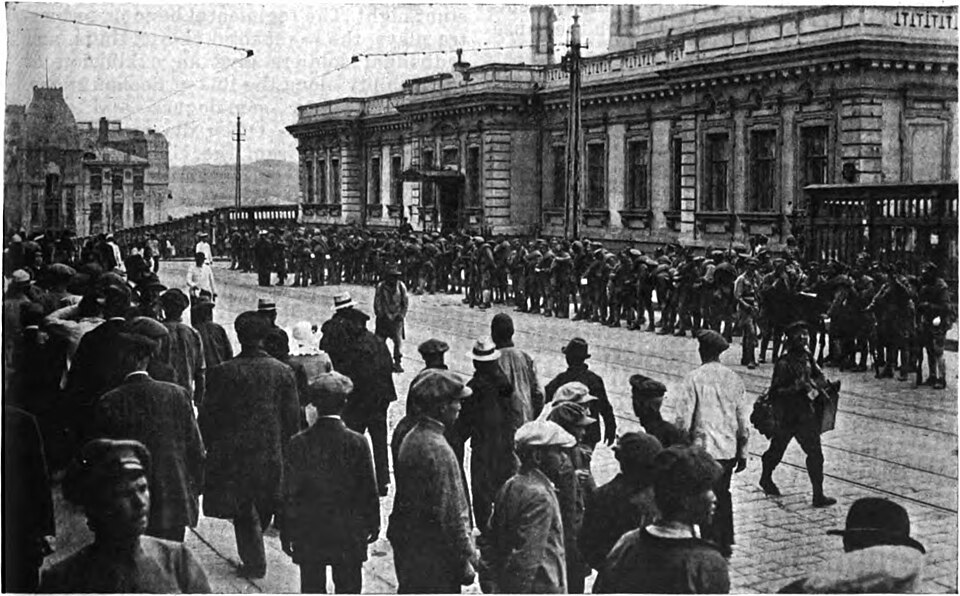
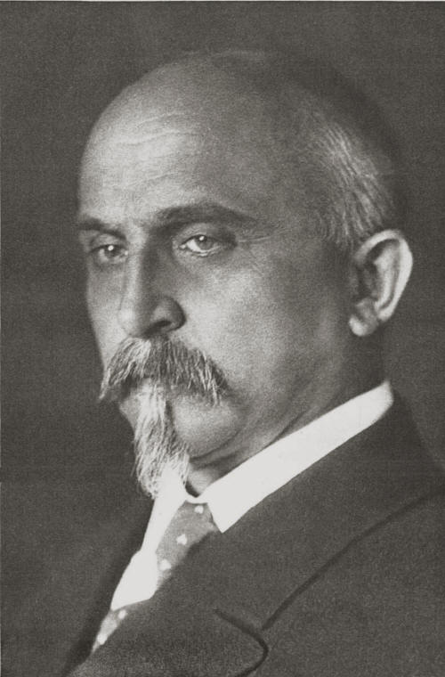
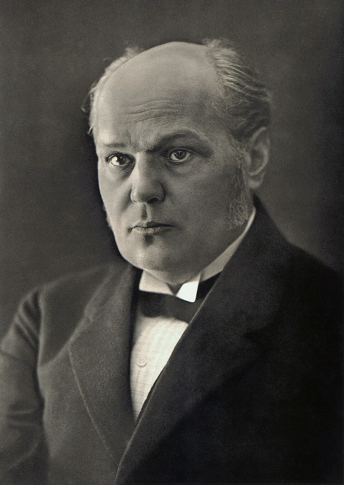
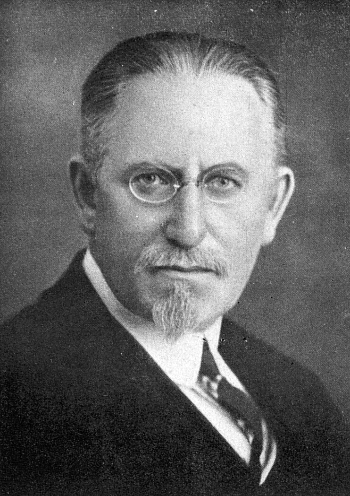
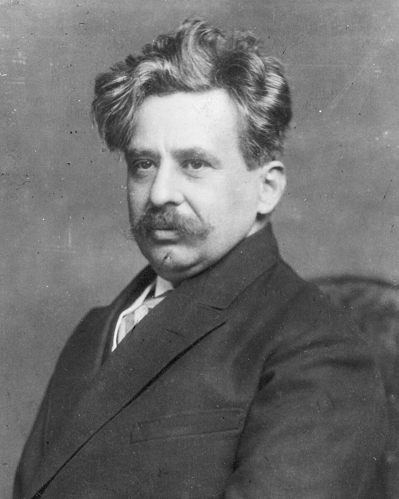
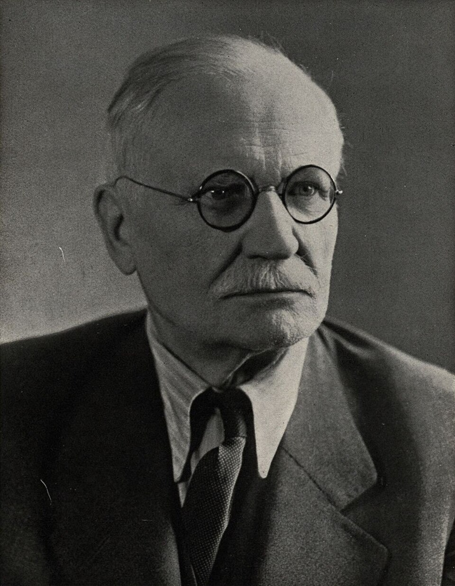
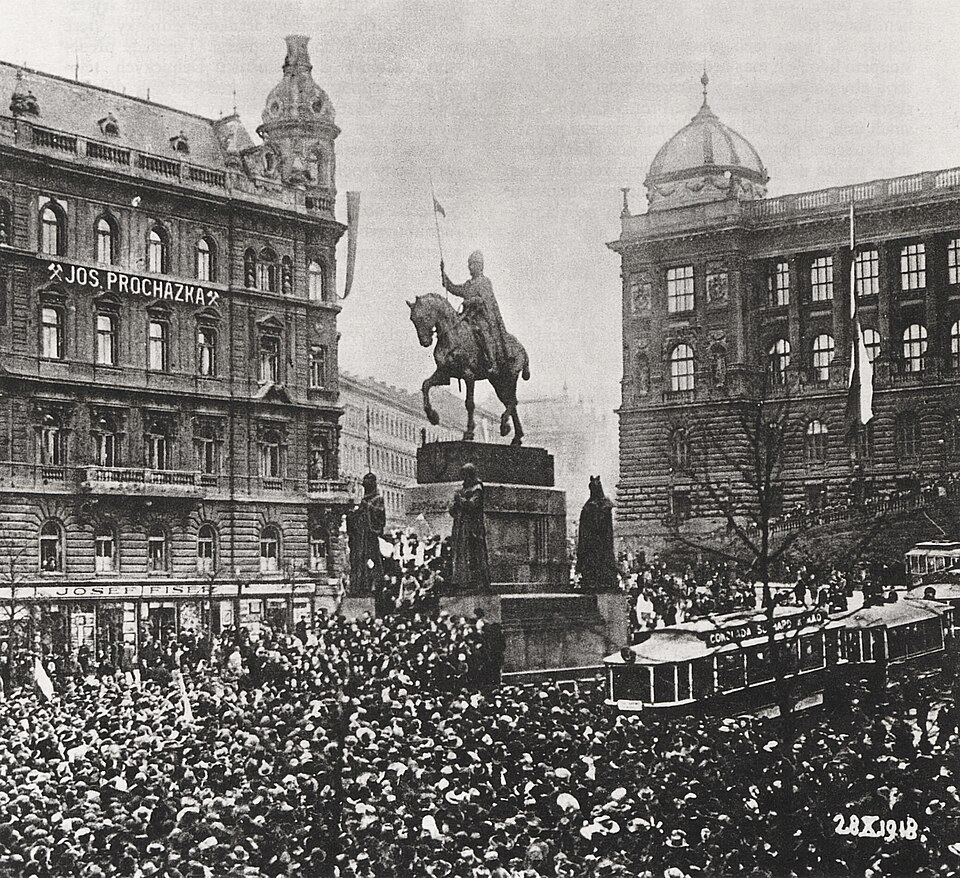
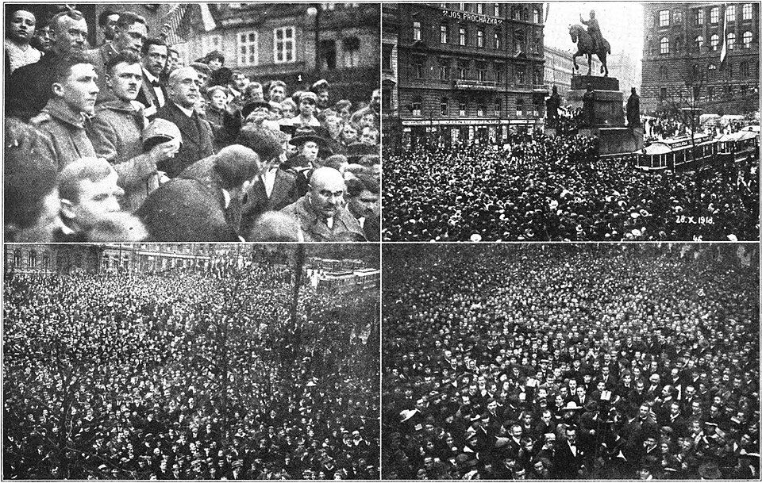

1 / 8skóre 0
…
🎮 Interaktivní mise pro 2. stupeň
Den, kdy se sen stal skutkem.
Vítej, rekrute! Čeká tě cesta od výstřelů v Sarajevu až k oslavám na Václaváku. Hraj mini-hry, sbírej XP a 11 odznaků a na konci dej velký kvíz s 36 otázkami. Kdo ho zvládne, vytiskne si diplom.
🗺️ Mapa misí
Klidně jdi popořadě, nebo skákej. Splněné mise se zabarví a odznaky najdeš v .
Mise 01 · 🔥 Zahřívačka
Osm tvrzení. Bez googlování! Klikni na tlačítko, nebo použij šipky ← lež / → pravda.
…
Mise 02 · 💥 Svět v roce 1914
Na mapě Evropy byla obří říše Habsburků. Žilo v ní víc než deset národů – a mnohé z nich toužily rozhodovat samy o sobě.
Monarchie s hlavním městem Vídní. Vládl jí císař František Josef I. – na trůnu seděl neuvěřitelných 68 let (1848–1916). Po něm přišel poslední císař Karel I.
Čechy, Morava a Slezsko patřily do rakouské části říše. Slovensko (tehdy „Horní Uhry“) do uherské části, kde vládli Maďaři a slovenské školy se zavíraly.
Muži odešli na frontu, doma byl hlad. Chleba, mouka i cukr se prodávaly jen na přídělové lístky. Káva se dělala z cikorky a žaludů. Kovové zvony se tavily na zbraně.
🎲 Mini-hra: Domino efekt
Klikni na první kostku a sleduj, jak spojenectví táhla do války jeden stát za druhým.
👆 Začni první kostkou vlevo.
Věděl(a) jsi? Válka měla skončit „do Vánoc“. Nakonec trvala čtyři roky (1914–1918) a zemřely v ní miliony vojáků. Válčily dva tábory: Dohoda (Francie, Británie, Rusko, později USA) a Ústřední mocnosti (Německo, Rakousko-Uhersko a jejich spojenci).
Mise 03 · 🚂 Odboj a legie
Odboj měl dvě fronty. Jedni přesvědčovali svět v cizině, druzí riskovali život tajnými akcemi doma. Přepni si, co tě zajímá.
Tomáš G. Masaryk odjíždí v prosinci 1914 do ciziny. Ví, že doma by ho zavřeli. Přednáší, píše a přesvědčuje politiky v Londýně, Paříži, Rusku i USA.
V Paříži vzniká Československá národní rada. Předseda Masaryk, tajemník Beneš, Štefánik má na starosti armádu a styky s Francií.
Francie, Británie a USA postupně uznávají Národní radu. 14. října se z ní stává prozatímní vláda. Čechoslováci jsou spojenci vítězů!
Skupina odvážlivců posílá do ciziny zprávy o tom, co chystá Vídeň. Patří k ní i Beneš, Kramář a Rašín. Kramáře a Rašína zatknou a odsoudí k smrti – nakonec dostanou milost.
V květnu 1917 vydají čeští spisovatelé manifest a vyzvou poslance, ať hájí národ. V lednu 1918 přijde Tříkrálová deklarace: chceme rozhodovat sami o sobě.
V červenci 1918 vzniká Národní výbor v čele s Karlem Kramářem. Připravuje se převzít moc, až se monarchie rozpadne. 14. října zasáhne Česko generální stávka.

Armáda bez státu!Čeští a slovenští vojáci, často bývalí zajatci, vstupovali do vojsk Dohody. Bojovali ve Francii (už 1914 rota Nazdar), v Itálii a hlavně v Rusku, kde u Zborova (1917) ukázali celému světu, co umí.
Bylo to nebezpečné: když je zajal rakouský voják, hrozila jim poprava za velezradu.
🎮 Mini-hra: Sibiřská anabáze
Klikni na Jeď dál a vyraz na 9 000 km dlouhou cestu po Transsibiřské magistrále.
Mise 04 · 📜 Cesta ke státu
28. říjen nebyl začátek, ale cílová páska dlouhého závodu. Prolétni si časovou osu – a pak zkus události seřadit sám.
🧩 Mini-hra: Kronikář
Přetáhni kartičky, nebo použij šipky ▲▼. Pak klikni na Zkontrolovat.
Mise 05 · 🧠 Lidé
Žádní superhrdinové – profesor, právník a astronom. Klikni na kartu a otoč ji.
Těchto pět politiků podepsalo večer 28. října 1918 zákon o vzniku státu.





🃏 Mini-hra: Pexeso
Mise 06 · 🕰️ Den D
Nebyla to revoluce s barikádami. Bylo to jako dobře naplánovaná akce – s trochou improvizace. Klikej na časy nebo si den přehraj.

„Lide československý! Tvůj odvěký sen stal se skutkem.“
Provolání Národního výboru, 28. 10. 1918

A co Slovensko? Zprávy se tehdy šířily pomalu. Slovenští politici v Martině o pražských událostech ještě nevěděli, když se 30. října 1918 v Martinské deklaraci ke společnému státu přihlásili sami.
Mise 07 · 🕵️ Šifra Maffie
Členové Maffie posílali zprávy do ciziny tajně a šifrovaně. Rakouská policie je nesměla přečíst! Pomocí šifrovacího kolečka zprávu rozlušti a napiš ji do políčka. Venkovní kruh je šifra, vnitřní kruh skutečné písmeno.
Zpráva 1 / 3
Zachycená zpráva:
Tip: každé písmeno je v abecedě posunuté o stejný počet míst. Tak šifroval už Julius Caesar.
Mise 08 · 🏳️ Nový stát
Nový stát musel vymyslet úplně všechno: vlajku, hymnu, peníze, zákony, armádu i poštovní známky.
První vlajka byla jen bílo-červená. Jenže úplně stejnou měli Poláci! Zkus ji vylepšit jako zákonodárci v roce 1920.
Bílá a červená pocházejí z erbu Čech.
Skoro každý čtvrtý obyvatel byl Němec. Soužití různých národů byla jedna z největších výzev první republiky.
Stát byl dlouhý přes 900 km – z Chebu až na Podkarpatskou Rus.
„Kde domov můj“ (česká část) + „Nad Tatrou sa blýska“ (slovenská část). Dnes zpíváme jen první polovinu – druhá patří Slovensku.
V roce 1919 nechal ministr Rašín staré rakouské bankovky okolkovat – nalepily se na ně kolky – a vznikla koruna československá.
Mise 09 · 🔍 Lovci mýtů
Otoč všechny karty a ochraň se před trapasem u tabule.
Mise 10 · 🎖️ Velký kvíz
Máš tři žolíky jako v soutěži Milionář. Za správné odpovědi v řadě dostaneš combo a víc XP. Hodně štěstí, rekrute!
🎖️
Legionář
0 / 36 správně
📚 Zdroje
Fotografie: Wikimedia Commons (volné dílo). Písma: Bricolage Grotesque, Space Mono (Google Fonts, OFL).
Postup se ukládá jen v tomto prohlížeči.
Tvůj pas legionáře
Mise 1918 · Diplom
Tímto se potvrzuje, že
Jan Novák
úspěšně dokončil(a) velký kvíz o vzniku Československa s výsledkem
0 / 36 · hodnost Legionář